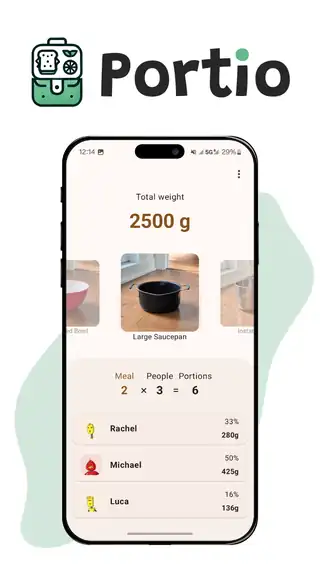

Portio
صحة ورياضة
Make meal prep easier with this app designed for batch cooking. No more guessing portions—just weigh your dish, and the app calculates the perfect distribution. 🔹 Easily divide your meals: Weigh your full pot, and the app tells you how much to put in each container. 🔹 Customize portions for each par
✓ ترخيص مفتوح (GPL-3.0-or-later) · آخر تحديث: 2025-04-22
1.10الإصدار
11.0 MBالحجم
GPL-3.0-or-laterالرخصة
Open in Kanzتحميل APK (11.0 MB)
Download APK
SHA-256: b5a598f0aedaa8d08527fe3b4ea2396df81d0fc8bb59095b3a638b4f3e3984cf

امسح الكود لفتح صفحة التطبيق
Scan to open this app page
لو كنز مش متثبت عندك: نزّل متجر كنز.
Not installed? Get the Kanz store.